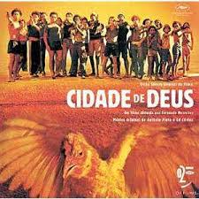

Salim Daif
Top Student @ LeWagon Rio de Janeiro
Adventurer. Risk-Lover. Optimist. Problem-Solver.
See for yourselfMy Favorite Brazilian Movies
|  | Cidade de DeusO filme retrata o crescimento do crime organizado na Cidade de Deus, uma favela que começou a ser construída nos anos 1960, e se tornou um dos lugares mais perigosos do Rio de Janeiro no começo dos anos 1980. |
 |
Tropa de EliteTropa de Elite, alternativamente conhecido como Tropa de Elite - Missão Dada é Missão Cumprida,[2][3] é um filme policial brasileiro de 2007, dirigido por José Padilha, que também escreveu seu roteiro, com Braulio Mantovani e Rodrigo Pimentel, e produziu com Marcos Prado. |
About this page
Through this website you are able to link to other websites which are not under the control of Salim Daif. He has no control over the nature, content and availability of those sites. The inclusion of any links does not necessarily imply a recommendation or endorse the views expressed within them.